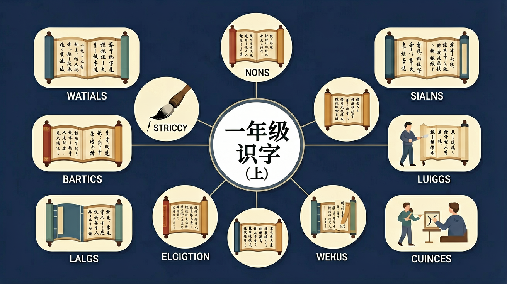

❓ 为什么‘大’字加一横就变成‘太’字？
❓ ‘日’和‘月’合起来为什么是‘明’？
❓ 为什么‘木’字能变成‘林’和‘森’？
学完这一课，这些问题你都能自信地回答。
And：学生已经会写简单的线条
But：不知道笔画有固定名称和顺序
Therefore：掌握笔画是认字的基础
汉字由8种基本笔画组成，比如横（一）、竖（丨）、撇（丿）。写'十'字时，要先写横再写竖，就像搭积木要有顺序。数字'七'的第一笔是横，第二笔是竖弯钩，写错顺序字就歪了。
🌍 就像搭乐高要先放底座，写'木'字也要先写横再写竖。妈妈切西瓜时，总是先横着切一刀再竖着切，和写'十'字一样呢！
写'人'字的第一笔是什么？
观察'人、入、八'三个字
And：学生认识独体字如'日、月'
But：不明白合体字的组合规律
Therefore：偏旁是汉字的'零件仓库'
偏旁是字的固定部件，比如'氵'表示水，'打'字左边的'扌'叫提手旁。'河'字有3点水旁，告诉我们这个字和水有关，右边'可'提示读音。像'清'字，左边3点水，右边'青'字，合起来就是干净的水的意思。
🌍 超市货架有零食区、文具区，偏旁就像标签。看到'饣'字旁就知道和食物有关，比如'饭'字，和学校食堂的招牌一样！
下面哪个字有'木'字旁？
And：学生能认读简单汉字
But：容易混淆'未-末'这样的字
Therefore：火眼金睛找不同
形近字就像双胞胎，要抓细节：'日'字瘦长像窗户，'目'字扁扁有4横像眼睛；'刀'字有钩子，'力'字像举哑铃。记'休'字时想：一个人（亻）靠着大树（木）休息，和'体'字完全不一样哦！
🌍 就像区分双胞胎同学要看痣的位置，'己'字开口笑，'已'字半闭嘴，'巳'字全闭嘴，和闹钟指针位置很像呢！
哪组字都是'扌'旁？
And：学生掌握基础字形
But：不理解汉字演变规律
Therefore：发现汉字创造秘密
古人用画画造字：'山'像三座山峰，'水'像流动的波浪。'明'=日+月，表示光亮；'森'=三个木，表示很多树。数字'三'就是三道横线，'上'字一竖在短横上面，就像小旗子插在土堆上。
🌍 就像用emoji组合表情，'哭'字是两只眼睛（罒）加水滴（氵），'笑'字是竹字头（⺮）加天亮的'夭'，超有趣！
'众'字由几个'人'组成？
用彩色笔标出‘好’字的女子旁和子字
‘休’字是人靠树木休息的图画演变
比一比‘日’在‘晴’和‘明’中的不同位置
观察‘山’字的甲骨文像三座山峰
用‘口’字旁组新字（吃/唱/叫）
先独立作答，再点选项查看对错与错因。
下列哪个字表示太阳？
哪个字与树木有关？
下列哪组字都是上下结构？
表示眼睛的字是____
答案：目
'目'像眼睛的形状
三个'木'组成的字是____
答案：森
'森'表示很多树木
✅ 强调手在上目在下
💡 部件位置混淆
✅ 对比‘木’与‘果’的笔画差异
💡 形近部件混淆
请给我出3道识字题，涉及形近字或同音字的辨认，我来作答，你来判断并讲解。
📌 你可以把上面的内容复制给 AI 助手（如 DeepSeek、ChatGPT），开始互动练习！
回忆：今天学了哪些关键词和规则？试着说出来。
用自己的话解释今天学的核心概念，不看书能说清楚吗？
用今天的知识解决一个实际问题，或写一个新例子。
把今天的知识与已有知识联系起来：有什么共同点？有什么区别？能不能自己创造一道新题？